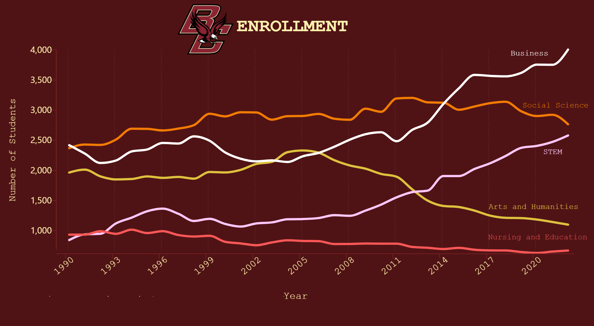

Rationale
Through this graph, I wished to visualize how the amount of students enrolling in certain areas of study has changed throughout time. Specifically, I wanted to convey the observation that the number of students enrolling in STEM, and business related majors steadily increased from 2005 to the present while arts and humanities majors have steadily decreased.
I chose to implement a line chart because it would allow me to clearly convey this narrative. By observing the slopes of the lines, viewers could easily track and compare the changes in student enrollment over time. Using a line chart would also allow viewers to track specifically when the changes started to occur.
There are also certain design choices I made to give more insight into this narrative. For example, I chose not to use a zero baseline because my message is more focused on the general trends over time of the topics that students are deciding to study, rather than the specific numerical change. Using a nonzero baseline would allow viewers to more easily compare the change in enrollment by observing the slopes of the lines. Similarly, I decided to use faint vertical gridlines that would allow viewers to compare the enrollment between specific years and to quickly determine when change started to happen without majorly obstructing the view of the data lines.
In regards to the colors of the trendlines, I chose to give the STEM, Business, and Arts and Humanities categories more emphasis by applying colors that contrasted more with the backgrounds because these categories displayed the trends that I wished to give insight to. Conversely, I applied colors that contrast less with the background color to the “Social Science” and “Nursing and Education” lines because the enrollment figures for those areas of study have stayed relatively the same over time.
To create this visualization, I first organized the original enrollment data into the categories using Google Sheets, and then a website called “columns.ai” to create the chart using the reorganized data.
Initial Sketches
Coxcombe Critique
The Coxcomb design allows viewers to quickly compare data based on the proportions of the triangles in the chart. It also puts an emphasis on the parts of data that have large differences, immediately drawing the attention of the audience to those differences. The circular layout makes it effective in portraying distribution of data that are cyclical, such as the months of a year in Florence Nightingale’s original chart.
However, the Coxcomb design can make it difficult for viewers to accurately compare points of data when the difference is subtle, thus the design is not suitable for visualizing precise points of data. In addition, without some form of numerical scale, the chart runs the risk of distorting the perception of viewers. For instance, the scale of the data in Florence Nightingale's chart is not provided. The differences between categories could be as little as 1 death to 10 deaths, as there is no quantitative way to analyze the data.
The Coxcomb chart is also limited to fewer points of data, as too many categories can make the individual parts of the chart difficult to see and clutter up the chart due to its circular format. Thus, the design is not effective at portraying data that is not cyclical, such as data accumulated over time. Florence Nightingale’s visualization, for example, used two charts to accommodate two years worth of data.
Rationale
The objective of this redesign was to create a graph that maintains the effectiveness of the Coxcomb chart at immediately highlighting differences between the categories of a dataset at a quick glance, while improving on some of its weaknesses. Specifically, the Coxcomb chart’s cyclical design makes it difficult to visualize data over long periods of time without multiple charts, it can distort the data because there is no quantitative measurement, and it is not effective at conveying precise data. The objective of the redesign amends these weaknesses, and maintains what it is effective at.
For example, placing all of the data points on the x-axis does not restrict the chart to 12 month cycles, like the Coxcomb chart does. It allows viewers to visualize multiple years of data in one chart, instead of 2 as seen in Florence Nightingale’s visualization. The mortality rate on the y-axis along with the horizontal gridlines also removes the impreciseness of the Coxcomb chart, allowing viewers to quickly determine the actual numbers behind the data points, rather than a vague sense of large and small amounts. These measures provide a scale that reduces the risk of distorting the data by allowing viewers to quickly quantify the data.
The redesign also maintains the impact that the Coxcomb chart has in highlighting differences between points in data. Using an area graph still demonstrates the glaring differences between categories of data with just a glance of the chart. It is still immediately obvious how many more soldiers had been dying from disease during the war compared to other causes of death. Using a stepped graph allows viewers to easily determine the data point and its category, the month, similar to the Coxcomb chart.